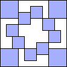
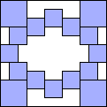
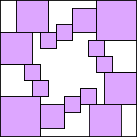
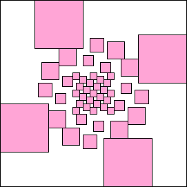

n/
n/ k/4
k/4
 2, since a square can't see k other squares if it is perimeter is less than k.
2, since a square can't see k other squares if it is perimeter is less than k.What are the small values of S3(n)? Is there a formula for S3(n)? How about Sk(n)? What are the small values of Mk? Is there a formula for Mk? What about placing squares in a rectangle? How do these values change if we allow the squares to be rotated or placed off the square grid?
David Bevan noticed Sk(n) ≤ n/k/42, since a square can't see k other squares if it is perimeter is less than k.
David Bevan also showed S5(n) ≥ (n2–12n+27)/4 for n≥18, S6(n) ≥ (n2–30n+181)/4 for n≥29, and S8(n) ≥ (n2–103n+2687)/5 for n=40r+6 and r≥2.
David Bevan was interested in the limiting density of solutions L(k). It is fairly easy to see that L(0)=0, L(1)=0, L(2)=0, L(3)=0, L(4)=1, L(5)=1/4, and L(6)=1/4. He thinks L(7)=2/9, L(8)=1/5, L(9)=2/25, L(10)=1/14, L(11)=1/18, and L(12)=1/20, since these are the best on an infinite grid. Are these correct? Is there any solution at all for n≥9 ?
David Bevan also made the following graph-theoretic observation: if k is odd, then Sk(n) is even.
Here are the values of Sk(n) for k≤2:
| S0(n) = n | 
| 
| 
| 
| 
| M0 = 1
| S1(n) = | 4n/3


M1 = 2
| S2(n) = 2n
| 


M2 = 2
| | ||||||||||
Here are the best known values of Sk(n) for other small k:
| S3(n) ≥ 4n-14 |  S3(5)=6 |  S3(6)≥10 |  S3(7)≥14 |  S3(8)≥18 | M3 = 5 |
| S4(2n) = 4n2-12n+4 |  S4(8)=20 |  S4(10)=44 |  S4(12)=76 | M4 = 8 |
|  S5(11)≥12 (Maurizio Morandi) |  S5(12)≥16 (Maurizio Morandi) |  S5(16)≥32 (Maurizio Morandi) |
S5(19)≥52 (Maurizio Morandi) | S5(23)≥84 (Maurizio Morandi) | M5 ≤ 11 |
|  S6(17)≥16 (Maurizio Morandi) | S6(18)≥18 (Maurizio Morandi) | S6(27)≥86 (Maurizio Morandi) | M6 ≤ 17 |
S7(28)≥30 (Maurizio Morandi) |  S7(30)≥8 (Maurizio Morandi) |
S7(32)≥66 (Maurizio Morandi) | S7(33)≥10 (Maurizio Morandi) | M7 ≤ 28 |
S8(38)≥21 (Maurizio Morandi) |  S8(54)≥49 (Maurizio Morandi) | S8(58)≥245 (Maurizio Morandi) | M8 ≤ 38 |
 S*3(2+ε)=4 (Trevor Green) | M*3 = 2 + ε |
 S*4(3+ε)=9 (David Bevan) |  S*4(4+ε)=16 (David Bevan) |  S*4(6+ε)=36 (David Bevan) | M*4 = 3 + ε |
 S*5(4+ε)=16 (David Bevan) | M*5 ≤ 4 + ε |
 S*6(4+ε)=16 (David Bevan) | M*6 ≤ 4 + ε |
If you can extend any of these results, please e-mail me. Click here to go back to Math Magic. Last updated 9/21/07.